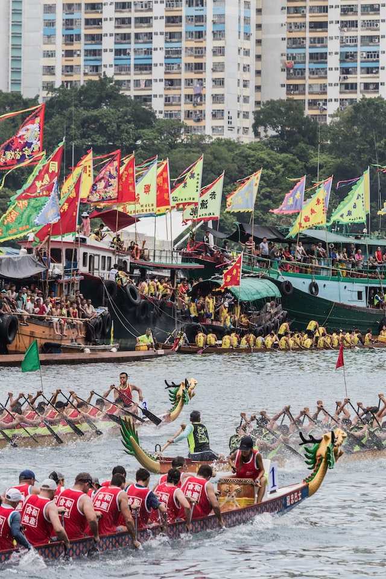
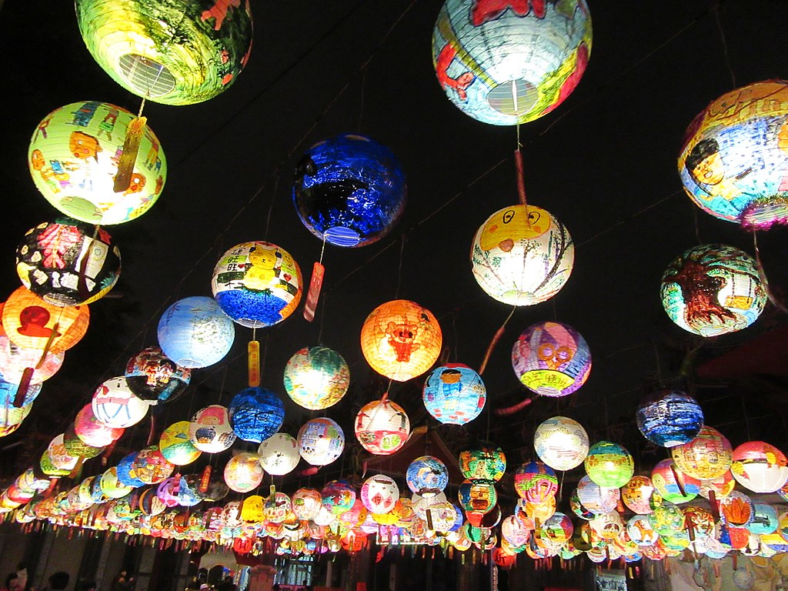

Traditions
As one of the world's most ancient civilizations, China is rich in traditions and unique customs. The three of the most important Chinese festivals are Chinese New Year, Dragon Boat Festival, and Lantern Festival.

Chinese New Year
Chinese New Year is the festival that celebrates the beginning of a new year on the traditional lunisolar and solar Chinese calendar. In Chinese and other East Asian cultures, the festival is commonly referred to as the Spring Festival. The Chinese New Year coincides with the lunar calendar. On the lunar calendar, the first day of the month begins during the new moon. Because of this, the Chinese New Year falls on different dates each year. However, it does always fall between January 21 and February 21. Celebrations to usher out the old year and bring forth the luck and prosperity of the new one, therefore, often include firecrackers, fireworks, and red clothes and decorations. Young people are given money in colorful red envelopes. In addition, Chinese New Year is a time to feast and to visit family members.
Dragon Boat Festival
Dragon Boat Festival is a traditional Chinese holiday which falls on the fifth day of the fifth lunar month, which is in late May or June on the Gregorian calendar. The two main activities during the festival are eating zongzi (rice dumplings) and boat races. The Dragon Boat Festival is strongly associated with the legend of Qu Yuan, a poet and court official who drowned himself in 278 BCE to protest imperial corruption. Dragon boat racing is said to originate from the villagers who rushed out in boats to rescue Qu Yuan and who thrashed the water with paddles to prevent his body from being eaten by fish. The locals also dropped balls of glutinous rice into the river, so that the fish would eat these and spare Qu Yuan's body—which is why we eat zongzi at Dragon Boat Festival.